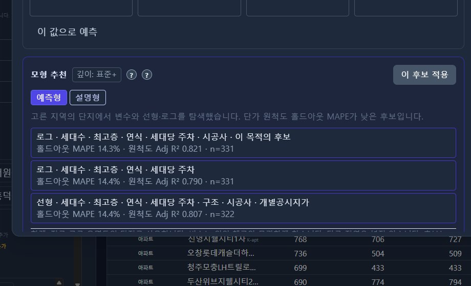

① 정의
R²는 평균만 말할 때보다 제곱 오차가 얼마나 줄었는지입니다
R²는 단가가 평균 146.3에서 벗어난 제곱의 합 가운데, 회귀식이 줄인 부분의 비율입니다. 1이면 식이 모든 점을 맞힌 것이고, 0이면 식을 넣어도 제곱 오차가 평균만 말할 때와 같습니다.
이 장의 식은 회귀분석의 232.5 − 0.68 × 면적입니다. 자료는 흥덕 예시 30건입니다. 총제곱합 192,761은 분산과 표준편차에서 단가 편차의 제곱을 더한 값이고, 잔차 제곱합 111,543은 잔차에서 쓴 값입니다.
② 같은 자료의 숫자
R²는 0.42, 평균절대오차는 38.2
111,543 / 192,761 = 0.58입니다. 제곱 오차의 58%는 직선 밖에 남아 있습니다. R² = 1 − 0.58 = 0.42입니다. 상관 −0.65의 제곱도 0.42입니다. 설명변수가 하나일 때 두 계산은 같은 비율입니다.
0.42는 한 건의 오차가 42%라는 뜻이 아닙니다. 30건의 평균절대오차는 38.2만원/㎡이고, 각 오차를 그 건의 단가로 나눈 뒤 평균하면 26.6%입니다. 설명변수가 하나이고 건수가 30일 때 조정 R²는 0.40입니다. 0.42에서 조금 줄어듭니다.
| 점수 | 값 | 같은 단위로 잰 대상 |
|---|---|---|
| R² | 0.42 | 단가의 제곱 오차 |
| 조정 R² | 0.40 | 단가의 제곱 오차, 변수 하나 |
| 평균절대오차 | 38.2 | 단가 (만원/㎡) |
| MAPE | 26.6% | 각 건의 단가 대비 비율 |
③ 그림
제곱 오차의 58%는 직선 밖에 남아 있습니다
막대 전체는 총제곱합 192,761입니다. 진한 구간이 R² 0.42, 연한 구간이 남은 58%입니다.
진한 구간은 막대의 42%입니다. 남은 연한 구간이 잔차 제곱합 111,543입니다.
세 막대는 모두 단가 단위입니다. 로그회귀의 0.59, 0.71은 이 막대에 없습니다.
④ 그 그림에서 읽을 문장
0.42는 제곱합의 비율이고, 38.2는 한 건당 단가 차이입니다
평균 146.3만 말하면 편차 제곱의 합이 192,761입니다. 직선을 넣으면 그 합이 111,543으로 줄고, 줄어든 비율이 0.42입니다. 줄고 남은 58% 가운데 62%는 7번 한 건의 잔차 제곱입니다. 그 62%는 R²가 아니라 잔차 쪽의 몫입니다.
단가 단위로 보면 로그-로그의 평균절대오차 27.2가 직선의 38.2보다 짧습니다. 이 비교는 세 식을 같은 단가로 되돌린 뒤의 비교입니다. 0.42와 0.71을 빼서 0.29가 더 설명된다고 읽지 않습니다.
⑤ 자주 하는 실수
로그 단가의 R² 0.71을 직선의 0.42와 같은 점수로 두지 않습니다
0.71은 ln(단가)가 자신의 평균에서 벗어난 제곱을 얼마나 줄였는지입니다. 0.42는 단가 그 자체의 제곱을 얼마나 줄였는지입니다. 로그를 씌우면 제곱을 재는 칸이 바뀝니다. 칸이 다르면 0.71이 더 크다고 해서 단가를 더 잘 맞힌 것은 아닙니다.
이 0.42는 30건에 맞추고 같은 30건으로 다시 잰 비율입니다. 번호 21–30만으로 잰 확인 오차 41.1은 다른 직선, 다른 10건의 점수입니다. R²가 그 확인 오차를 대신하지 않습니다.
조금 더 알아보기
조정 R² = 1 − (1 − 0.42) × 29 / 28 = 0.40입니다. 변수가 하나이고 건수가 30이면 페널티가 0.02입니다. 변수를 더 넣으면 R²는 줄지 않고, 조정 R²의 나눗수는 커집니다.
7번을 뺀 29건에 직선을 다시 맞추면 R²는 0.54가 되고 기울기는 −0.51입니다. 7번을 빼서 0.42를 0.54로 만드는 일은 이 점수의 목적이 아닙니다.
CH2 Macro에서는?
회귀실험 결과 표
회귀실험 결과에서 R², Adj-R², MAPE 등을 확인할 수 있습니다. 모형추천 화면에서는 여러 모형을 나란히 비교합니다. R²가 높아 보이는 모형이 항상 1순위가 아닐 수 있습니다.
회귀실험 카드의 MAPE는 적합에 쓴 표본 내에서의 오차입니다. 모형추천의 CV-MAPE는 교차검증 오차로, 새 거래 예측에 더 가깝습니다. 두 지표를 혼동하지 않도록 함께 읽어 보시기 바랍니다.

Macro 화면
회귀실험 · R² · Adj R² · MAPE
| 지표 | 값 | ? |
|---|---|---|
| R² | 0.811 | ? |
| Adj R² | 0.798 | ? |
| MAPE (표본 내) | 11.4% | ? |
모형추천 CV-MAPE 17.8% → 표본 내 MAPE보다 클 수 있음 (과적합 신호)
CH2 Macro에서 확인하기 → 집합 · 회귀실험 · R² / Adj-R²